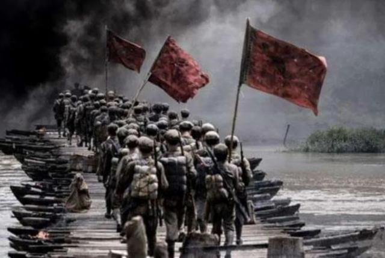

23 July
湘江血战
到广西，来全州看一看湘江战役，这是我的一个心愿。这一战，在我脑海里印象是最深刻的，我也讲得最多。
试想，如果没有这么一批勇往直前、舍生忘死的红军将士，红军怎么可能冲出敌人的封锁线，而且冲出去付出了那么大的牺牲，还没有溃散。靠的是什么？靠的正是理想信念的力量！
困难再大，想想红军长征，想想湘江血战。
——2021年4月，习近平在广西考察时的讲话
血战湘江，是中央红军长征以来最为惨烈的一仗。
1934年底，连续突破三道封锁线的中央红军经过湘江流域的广西桂林灌阳、全州和兴安境内时，遭到国民党军队重兵围追堵截。面对数倍于己的敌人，中央红军极其艰难地突破国民党军布下的第四道封锁线，粉碎了国民党围歼中央红军于湘江以东的企图。
惨烈的战斗里，红军战士以巨大的牺牲，谱写了伟大而悲壮的战争史诗。红五军团第三十四师在掩护中央红军主力渡过湘江后被敌人截断，几乎全部牺牲，师长陈树湘身负重伤，不幸被俘，用手从腹部伤口处绞断了肠子，壮烈牺牲，年仅29岁……
湘江之战后，中央红军人数由长征出发时的8.6万人，减少到3万余人。
